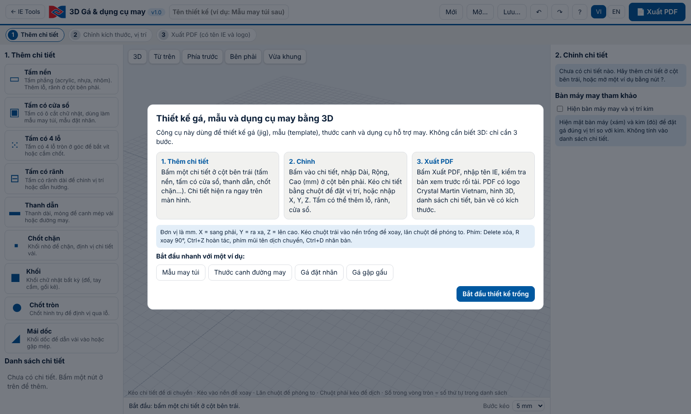
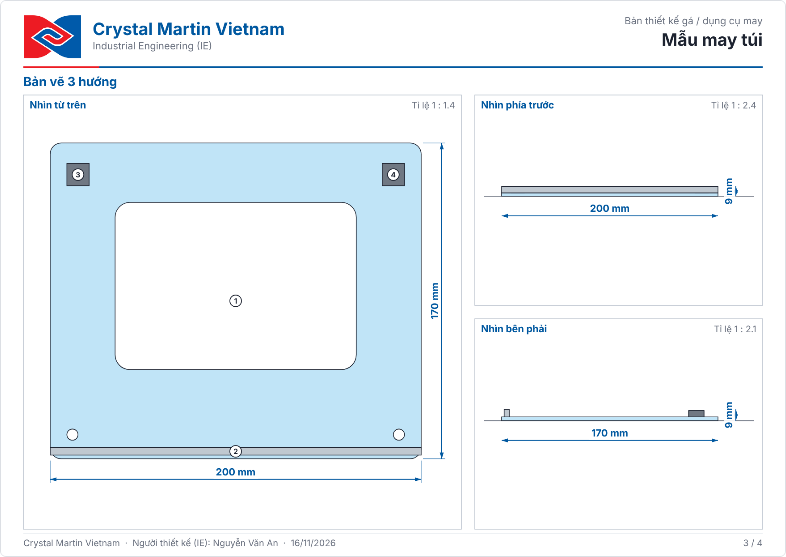
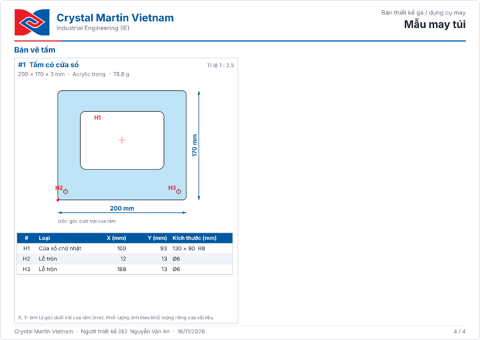

3D Gá & dụng cụ may
Thiết kế gá (jig), mẫu (template), thước canh và dụng cụ hỗ trợ may bằng 3D, rồi xuất PDF có logo Crystal Martin Vietnam và tên IE. Không cần biết 3D. Chạy bằng Chrome hoặc Edge, không gửi dữ liệu đi đâu. Công cụ này khác với Layout Sim (bố trí chuyền).
1. Giới thiệu

2. Ba bước


| Bước | Làm gì |
|---|---|
| 1. Thêm chi tiết | Bấm một nút ở cột trái. Chi tiết mới nằm cạnh các chi tiết cũ; nếu đang chọn một chi tiết thì chốt, thanh, khối mới được đặt lên trên chi tiết đó. |
| 2. Chỉnh | Bấm vào chi tiết (trên hình hoặc trong danh sách). Nhập Dài, Rộng, Cao, vị trí X, Y, Z ở cột phải, hoặc kéo chi tiết bằng chuột. Kéo vào nền trống để xoay hình, lăn chuột để phóng to, chuột phải kéo để dịch. |
| 3. Xuất PDF | Bấm 📄 Xuất PDF, nhập tên IE, xem trước, bấm ⬇ Tải PDF. |
3. Các loại chi tiết
| Nút | Dùng cho |
|---|---|
| Tấm nền, Tấm có cửa sổ, Tấm có 4 lỗ, Tấm có rãnh | Mặt gá, mẫu cắt, mẫu đặt nhãn, mẫu may túi. Tấm có thể thêm lỗ tròn, rãnh, cửa sổ chữ nhật và bo góc. |
| Thanh dẫn, Chốt chặn, Khối | Canh mép vải, chặn, đế, tay cầm, gối kê. |
| Chốt tròn | Chốt định vị đi qua lỗ. |
| Mái dốc | Dẫn vải vào, gập mép. |
Vật liệu: acrylic trong, nhựa ABS/PVC, nhôm, thép, gỗ ép, cao su/mút. Chương trình ước tính khối lượng theo khối lượng riêng của vật liệu (đã trừ lỗ).
4. Chỉnh chi tiết
- Dài / Rộng / Cao (Dày): Dài theo hướng ngang (X), Rộng theo hướng ra xa (Y), Cao theo hướng lên (Z).
- X, Y, Z: vị trí so với gốc 0. Z là độ cao của mặt đáy chi tiết (0 = trên mặt bàn). Nút ⬆ Đặt lên trên tự tính Z để chi tiết nằm trên các chi tiết bên dưới.
- Xoay: ⟲ 90°, ⟳ 90° hoặc nhập góc.
- Lỗ, rãnh, cửa sổ (chỉ tấm): vị trí tính từ tâm tấm. Bản vẽ PDF đổi sang tọa độ từ góc dưới trái của tấm để gia công.
- Bàn máy may tham khảo (khi chưa chọn chi tiết nào, cột phải): hiện mặt bàn máy và vị trí kim để đặt gá đúng so với kim; kim cũng có trên bản vẽ PDF.
- Ô Bước kéo (dưới hình 3D): 1, 5 hoặc 10 mm khi kéo chuột; giữ Alt để kéo tự do.
5. Xuất PDF
Tên IE là bắt buộc (nút Tải PDF bị khóa nếu để trống; tên được nhớ cho lần sau). Có thể nhập thêm mã hàng, mục đích sử dụng, ghi chú, phiên bản và ngày. Bản xem trước hiện từng trang; bỏ chọn trang nào không cần.





6. Lưu và mở thiết kế
Lưu… tải file .fixture3d.json (để mở lại, sửa tiếp); Mở… mở lại file đó. Chương trình cũng tự giữ bản đang làm trong trình duyệt này. Thiết kế chỉ nằm trên máy bạn.
7. Phím tắt
| Phím | Tác dụng |
|---|---|
| Delete | Xóa chi tiết đang chọn |
| R / Shift+R | Xoay 90° phải / trái |
| Mũi tên (Shift = ×10) | Dịch chuyển theo bước kéo |
| Ctrl+D | Nhân bản |
| Ctrl+Z / Ctrl+Y | Hoàn tác / làm lại |
| Ctrl+S | Lưu file thiết kế |
8. Xử lý sự cố
| Hiện tượng | Cách xử lý |
|---|---|
| Màn hình 3D trắng / báo lỗi | Dùng Chrome hoặc Edge mới; bật tăng tốc phần cứng trong Cài đặt. |
| Không tải được PDF | Nhập tên IE; cho phép tải nhiều file nếu trình duyệt hỏi. |
| Không chọn được chi tiết nhỏ | Chọn trong danh sách bên trái, hoặc phóng to hình. |
| Sau khi cập nhật, giao diện cũ | Nhấn Ctrl+F5. |